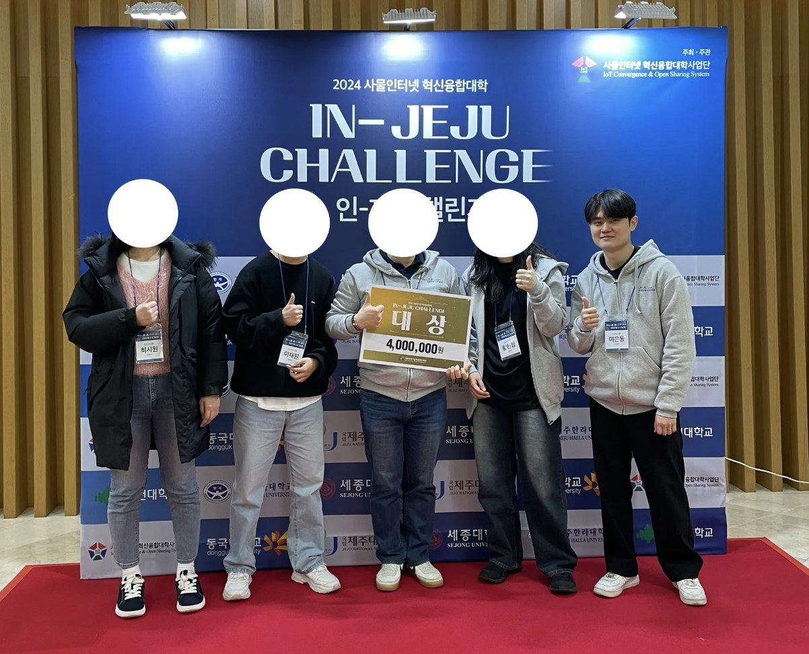
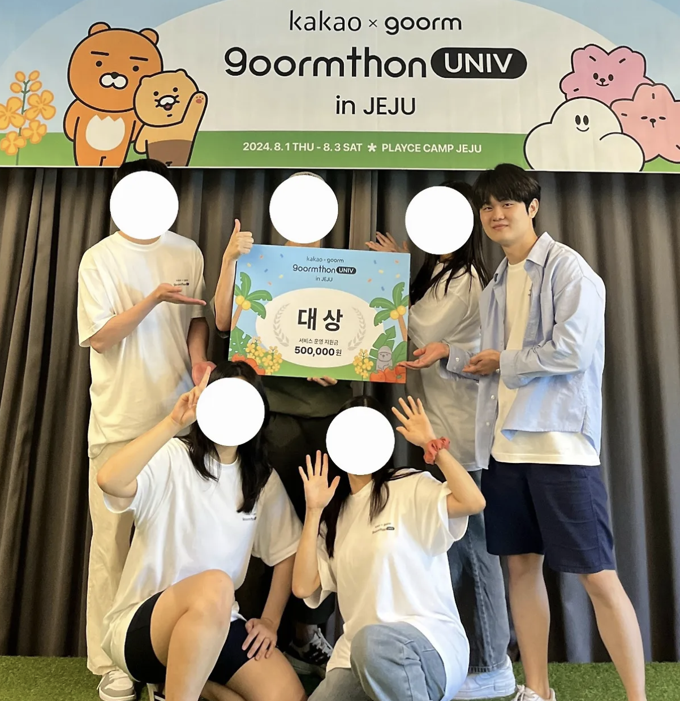
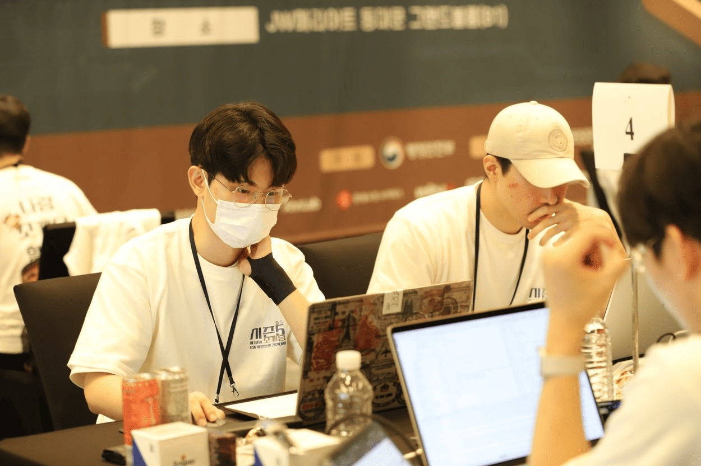

안녕하세요,
프론트엔드 개발자 여은동입니다.

Flutter를 중심으로 앱을 제작해왔습니다.
프로젝트 디딤돌 사이의 빈틈을 채우고, 옥의 티를 정리합니다.
Flutter를 중심으로 앱을 제작해왔습니다.
프로젝트 디딤돌 사이의 빈틈을 채우고, 옥의 티를 정리합니다.
 JavaScript
JavaScript React
React React-Native
React-Native Flutter
Flutter Mysql
Mysql Github
Github Docker
Docker Figma
Figma VSC
VSC Notion
Notion Slack
Slack


프로젝트 설명
고령층 우울증의 유병률이 증가하고 있는 상황에서, 충분한 사회적 지원 시스템의 부재가 문제 해결을 어렵게 하고 있다. 자서전 작성이 노인 우울증 감소에 효과적임을 확인하였으므로, 이를 기반으로 (주)이분의일코리아와 협력하여, 생성형 AI를 활용한 구술 자서전 애플리케이션 개발을 추진하고자 했다.
기술 스택
기본 정보
수행 역할(FE)
활동 사진
프로젝트 설명
유기견 입양에 대한 관심이 점점 높아지고 있지만, 유기견과 반려인이 매칭되는 확률은 여전히 낮다. 이에 매칭확률을 높이고자 “포인핸드”에서는 강아지의 성격, 각종 좋아하는 것 등 다양한 정보를 제공해주고자 노력하지만, 입양을 고민하는 이들에겐 아직 어렵게 다가오고 있다. 이를 해결하기 위해 생성형 AI를 활용한 “유기견의 페르소나”를 만들어, 유기견과 직접 대화하는 듯한 기능을 통해 유기견과 예비 반려인이 매칭할 수 있는 여지를 높이고자 했다. 최종적으로는 유기견을 관심있게 바라볼 수 있는 새로운 입양 시스템을 만들고자 했다.
기술 스택
기본 정보
수행 역할(FE)
활동 사진
프로젝트 설명
SW중심대학 공동 AI 경진대회 2023으로, 위성 dataset을 건물, 비건물로 segmentation 한다. dacon에서 dice score를 기준으로 competition을 진행한다.
기술 스택
기본 정보
수행 역할
프로젝트 설명
일반 병원이 진료를 보지 않는 시각에는, 필연적으로 응급실에 갈 수 밖에 없다. 하지만 환자 입장에서는 현재 어떤 응급실이 혼잡한지 알 수 없다. 또한 소아과 담당 주치의가 없는 응급실에 위급한 소아 환자가 가게 되면, 진료를 봐주지 않는 문제가 발생하여 소위 말하는 “응급실 뺑뺑이” 현상이 일어나게 된다. 이를 해결하기 위해, 응급실 혼잡도와 소아 진료가 가능한 응급실을 알려주는 웹/앱을 만들고자 했다.
기술 스택
기본 정보
수행 역할(FE, PM)
활동 사진
